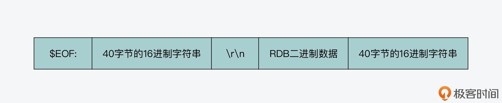
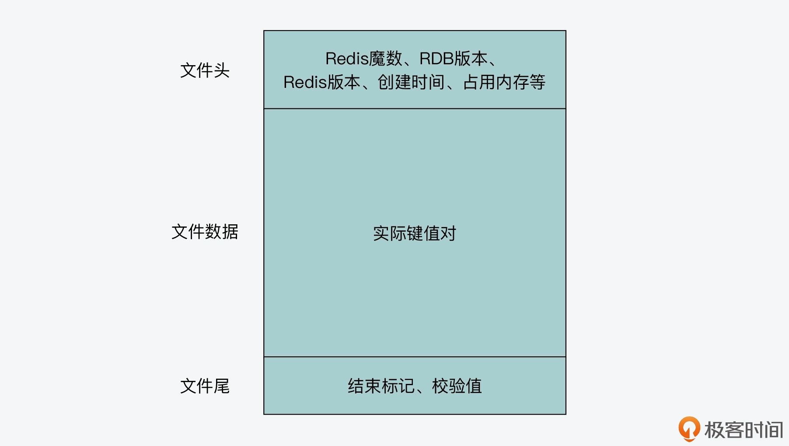

- 00 开篇词 阅读Redis源码能给你带来什么？.md
- 01 带你快速攻略Redis源码的整体架构.md
- 02 键值对中字符串的实现，用char还是结构体？.md
- 03 如何实现一个性能优异的Hash表？.md
- 04 内存友好的数据结构该如何细化设计？.md
- 05 有序集合为何能同时支持点查询和范围查询？.md
- 06 从ziplist到quicklist，再到listpack的启发.md
- 07 为什么Stream使用了Radix Tree？.md
- 08 Redis server启动后会做哪些操作？.md
- 09 Redis事件驱动框架（上）：何时使用select、poll、epoll？.md
- 10 Redis事件驱动框架（中）：Redis实现了Reactor模型吗？.md
- 11 Redis事件驱动框架（下）：Redis有哪些事件？.md
- 12 Redis真的是单线程吗？.md
- 13 Redis 6.0多IO线程的效率提高了吗？.md
- 14 从代码实现看分布式锁的原子性保证.md
- 15 为什么LRU算法原理和代码实现不一样？.md
- 16 LFU算法和其他算法相比有优势吗？.md
- 17 Lazy Free会影响缓存替换吗？.md
- 18 如何生成和解读RDB文件？.md
- 19 AOF重写（上）：触发时机与重写的影响.md
- 20 AOF重写（下）：重写时的新写操作记录在哪里？.md
- 21 主从复制：基于状态机的设计与实现.md
- 22 哨兵也和Redis实例一样初始化吗？.md
- 23 从哨兵Leader选举学习Raft协议实现（上）.md
- 24 从哨兵Leader选举学习Raft协议实现（下）.md
- 25 PubSub在主从故障切换时是如何发挥作用的？.md
- 26 从Ping-Pong消息学习Gossip协议的实现.md
- 27 从MOVED、ASK看集群节点如何处理命令？.md
- 28 Redis Cluster数据迁移会阻塞吗？.md
- 29 如何正确实现循环缓冲区？.md
- 30 如何在系统中实现延迟监控？.md
- 31 从Module的实现学习动态扩展功能.md
- 32 如何在一个系统中实现单元测试？.md
- 结束语 Redis源码阅读，让我们从新开始.md
18 如何生成和解读RDB文件？
从今天这节课开始，我们又将进入一个新的模块，也就是可靠性保证模块。在这个模块中，我会先带你了解 Redis 数据持久化的实现，其中包括 Redis 内存快照 RDB 文件的生成方法，以及 AOF 日志的记录与重写。了解了这部分内容，可以让你掌握 RDB 文件的格式，学习到如何制作数据库镜像，并且你也会进一步掌握 AOF 日志重写对 Redis 性能的影响。
然后，我还会围绕 Redis 主从集群的复制过程、哨兵工作机制和故障切换这三个方面，来给你介绍它们的代码实现。因为我们知道，主从复制是分布式数据系统保证可靠性的一个重要机制，而 Redis 就给我们提供了非常经典的实现，所以通过学习这部分内容，你就可以掌握到在数据同步实现过程中的一些关键操作和注意事项，以免踩坑。
好，那么今天这节课，我们就先从 RDB 文件的生成开始学起。下面呢，我先带你来了解下 RDB 创建的入口函数，以及调用这些函数的地方。
RDB 创建的入口函数和触发时机
Redis 源码中用来创建 RDB 文件的函数有三个，它们都是在rdb.c文件中实现的，接下来我就带你具体了解下。
- rdbSave 函数
这是 Redis server 在本地磁盘创建 RDB 文件的入口函数。它对应了 Redis 的 save 命令，会在 save 命令的实现函数 saveCommand（在 rdb.c 文件中）中被调用。而 rdbSave 函数最终会调用 rdbSaveRio 函数（在 rdb.c 文件中）来实际创建 RDB 文件。rdbSaveRio 函数的执行逻辑就体现了 RDB 文件的格式和生成过程，我稍后向你介绍。
- rdbSaveBackground 函数
这是 Redis server 使用后台子进程方式，在本地磁盘创建 RDB 文件的入口函数。它对应了 Redis 的 bgsave 命令，会在 bgsave 命令的实现函数 bgsaveCommand（在 rdb.c 文件中）中被调用。这个函数会调用 fork 创建一个子进程，让子进程调用 rdbSave 函数来继续创建 RDB 文件，而父进程，也就是主线程本身可以继续处理客户端请求。
下面的代码展示了 rdbSaveBackground 函数创建子进程的过程，你可以看下。我在【第 12 讲】中也向你介绍过 fork 的使用，你可以再回顾下。
int rdbSaveBackground(char *filename, rdbSaveInfo *rsi) {
...
if ((childpid = fork()) == 0) { //子进程的代码执行分支
...
retval = rdbSave(filename,rsi); //调用rdbSave函数创建RDB文件
...
exitFromChild((retval == C_OK) ? 0 : 1); //子进程退出
} else {
... //父进程代码执行分支
}
}
- rdbSaveToSlavesSockets 函数
这是 Redis server 在采用不落盘方式传输 RDB 文件进行主从复制时，创建 RDB 文件的入口函数。它会被 startBgsaveForReplication 函数调用（在replication.c文件中）。而 startBgsaveForReplication 函数会被 replication.c 文件中的 syncCommand 函数和 replicationCron 函数调用，这对应了 Redis server 执行主从复制命令，以及周期性检测主从复制状态时触发 RDB 生成。
和 rdbSaveBackground 函数类似，rdbSaveToSlavesSockets 函数也是通过 fork 创建子进程，让子进程生成 RDB。不过和 rdbSaveBackground 函数不同的是，rdbSaveToSlavesSockets 函数是通过网络以字节流的形式，直接发送 RDB 文件的二进制数据给从节点。
而为了让从节点能够识别用来同步数据的 RDB 内容，rdbSaveToSlavesSockets 函数调用 rdbSaveRioWithEOFMark 函数（在 rdb.c 文件中），在 RDB 二进制数据的前后加上了标识字符串，如下图所示：

以下代码也展示了 rdbSaveRioWithEOFMark 函数的基本执行逻辑。你可以看到，它除了写入前后标识字符串之外，还是会调用 rdbSaveRio 函数实际生成 RDB 内容。
int rdbSaveRioWithEOFMark(rio *rdb, int *error, rdbSaveInfo *rsi) {
...
getRandomHexChars(eofmark,RDB_EOF_MARK_SIZE); //随机生成40字节的16进制字符串，保存在eofmark中，宏定义RDB_EOF_MARK_SIZE的值为40
if (rioWrite(rdb,"$EOF:",5) == 0) goto werr; //写入$EOF
if (rioWrite(rdb,eofmark,RDB_EOF_MARK_SIZE) == 0) goto werr; //写入40字节的16进制字符串eofmark
if (rioWrite(rdb,"\r\n",2) == 0) goto werr; //写入\r\n
if (rdbSaveRio(rdb,error,RDB_SAVE_NONE,rsi) == C_ERR) goto werr; //生成RDB内容
if (rioWrite(rdb,eofmark,RDB_EOF_MARK_SIZE) == 0) goto werr; //再次写入40字节的16进制字符串eofmark
...
}
好了，了解了 RDB 文件创建的三个入口函数后，我们也看到了，RDB 文件创建的三个时机，分别是 save 命令执行、bgsave 命令执行以及主从复制。那么，除了这三个时机外，在 Redis 源码中，还有哪些地方会触发 RDB 文件创建呢？
实际上，因为 rdbSaveToSlavesSockets 函数只会在主从复制时调用，所以，我们只要通过在 Redis 源码中查找 rdbSave、rdbSaveBackground 这两个函数，就可以了解触发 RDB 文件创建的其他时机。
那么经过查找，我们可以发现在 Redis 源码中，rdbSave 还会在 flushallCommand 函数（在db.c文件中）、prepareForShutdown 函数（在server.c文件中）中被调用。这也就是说，Redis 在执行 flushall 命令以及正常关闭时，会创建 RDB 文件。
对于 rdbSaveBackground 函数来说，它除了在执行 bgsave 命令时被调用，当主从复制采用落盘文件方式传输 RDB 时，它也会被 startBgsaveForReplication 函数调用。此外，Redis server 运行时的周期性执行函数 serverCron（在server.c文件中），也会调用 rdbSaveBackground 函数来创建 RDB 文件。
为了便于你掌握 RDB 文件创建的整体情况，我画了下面这张图，展示了 Redis 源码中创建 RDB 文件的函数调用关系，你可以看下。

好了，到这里，你可以看到，实际最终生成 RDB 文件的函数是 rdbSaveRio。所以接下来，我们就来看看 rdbSaveRio 函数的执行过程。同时，我还会给你介绍 RDB 文件的格式是如何组织的。
RDB 文件是如何生成的？
不过在了解 rdbSaveRio 函数具体是如何生成 RDB 文件之前，你还需要先了解下 RDB 文件的基本组成部分。这样，你就可以按照 RDB 文件的组成部分，依次了解 rdbSaveRio 函数的执行逻辑了。
那么，一个 RDB 文件主要是由三个部分组成的。
- 文件头：这部分内容保存了 Redis 的魔数、RDB 版本、Redis 版本、RDB 文件创建时间、键值对占用的内存大小等信息。
- 文件数据部分：这部分保存了 Redis 数据库实际的所有键值对。
- 文件尾：这部分保存了 RDB 文件的结束标识符，以及整个文件的校验值。这个校验值用来在 Redis server 加载 RDB 文件后，检查文件是否被篡改过。
下图就展示了 RDB 文件的组成，你可以看下。

好，接下来，我们就来看看 rdbSaveRio 函数是如何生成 RDB 文件中的每一部分的。这里，为了方便你理解 RDB 文件格式以及文件内容，你可以先按照如下步骤准备一个 RDB 文件。
第一步，在你电脑上 Redis 的目录下，启动一个用来测试的 Redis server，可以执行如下命令：
./redis-server
第二步，执行 flushall 命令，清空当前的数据库：
./redis-cli flushall
第三步，使用 redis-cli 登录刚启动的 Redis server，执行 set 命令插入一个 String 类型的键值对，再执行 hmset 命令插入一个 Hash 类型的键值对。执行 save 命令，将当前数据库内容保存到 RDB 文件中。这个过程如下所示：
127.0.0.1:6379>set hello redis
OK
127.0.0.1:6379>hmset userinfo uid 1 name zs age 32
OK
127.0.0.1:6379> save
OK
好了，到这里，你就可以在刚才执行 redis-cli 命令的目录下，找见刚生成的 RDB 文件，文件名应该是 dump.rdb。
不过，因为 RDB 文件实际是一个二进制数据组成的文件，所以如果你使用一般的文本编辑软件，比如 Linux 系统上的 Vim，在打开 RDB 文件时，你会看到文件中都是乱码。所以这里，我给你提供一个小工具，如果你想查看 RDB 文件中二进制数据和对应的 ASCII 字符，你可以使用 Linux 上的 od 命令，这个命令可以用不同进制的方式展示数据，并显示对应的 ASCII 字符。
比如，你可以执行如下的命令，读取 dump.rdb 文件，并用十六进制展示文件内容，同时文件中每个字节对应的 ASCII 字符也会被对应显示出来。
od -A x -t x1c -v dump.rdb
以下代码展示的就是我用 od 命令，查看刚才生成的 dump.rdb 文件后，输出的从文件头开始的部分内容。你可以看到这四行结果中，第一和第三行是用十六进制显示的 dump.rdb 文件的字节内容，这里每两个十六进制数对应了一个字节。而第二和第四行是 od 命令生成的每个字节所对应的 ASCII 字符。

这也就是说，在刚才生成的 RDB 文件中，如果想要转换成 ASCII 字符，它的文件头内容其实就已经包含了 REDIS 的字符串和一些数字，而这正是 RDB 文件头包含的内容。
那么下面，我们就来看看 RDB 文件的文件头是如何生成的。
生成文件头
就像刚才给你介绍的，RDB 文件头的内容首先是魔数，这对应记录了 RDB 文件的版本。在 rdbSaveRio 函数中，魔数是通过 snprintf 函数生成的，它的具体内容是字符串“REDIS”，再加上 RDB 版本的宏定义 RDB_VERSION（在rdb.h文件中，值为 9）。然后，rdbSaveRio 函数会调用 rdbWriteRaw 函数（在 rdb.c 文件中），将魔数写入 RDB 文件，如下所示：
snprintf(magic,sizeof(magic),"REDIS%04d",RDB_VERSION); //生成魔数magic
if (rdbWriteRaw(rdb,magic,9) == -1) goto werr; //将magic写入RDB文件
刚才用来写入魔数的 rdbWriteRaw 函数，它实际会调用 rioWrite 函数（在 rdb.h 文件中）来完成写入。而 rioWrite 函数是 RDB 文件内容的最终写入函数，它负责根据要写入数据的长度，把待写入缓冲区中的内容写入 RDB。这里，你需要注意的是，RDB 文件生成过程中，会有不同的函数负责写入不同部分的内容，不过这些函数最终都还是调用 rioWrite 函数，来完成数据的实际写入的。
好了，当在 RDB 文件头中写入魔数后，rdbSaveRio 函数紧接着会调用 rdbSaveInfoAuxFields 函数，将和 Redis server 相关的一些属性信息写入 RDB 文件头，如下所示：
if (rdbSaveInfoAuxFields(rdb,flags,rsi) == -1) goto werr; //写入属性信息
rdbSaveInfoAuxFields 函数是在 rdb.c 文件中实现的，它会使用键值对的形式，在 RDB 文件头中记录 Redis server 的属性信息。下表中列出了 RDB 文件头记录的一些主要信息，以及它们对应的键和值，你可以看下。
那么，当属性值为字符串时，rdbSaveInfoAuxFields 函数会调用 rdbSaveAuxFieldStrStr 函数写入属性信息；而当属性值为整数时，rdbSaveInfoAuxFields 函数会调用 rdbSaveAuxFieldStrInt 函数写入属性信息，如下所示：
if (rdbSaveAuxFieldStrStr(rdb,"redis-ver",REDIS_VERSION) == -1) return -1;
if (rdbSaveAuxFieldStrInt(rdb,"redis-bits",redis_bits) == -1) return -1;
if (rdbSaveAuxFieldStrInt(rdb,"ctime",time(NULL)) == -1) return -1;
if (rdbSaveAuxFieldStrInt(rdb,"used-mem",zmalloc_used_memory()) == -1) return -1;
这里，无论是 rdbSaveAuxFieldStrStr 函数还是 rdbSaveAuxFieldStrInt 函数，它们都会调用 rdbSaveAuxField 函数来写入属性值。rdbSaveAuxField 函数是在 rdb.c 文件中实现的，它会分三步来完成一个属性信息的写入。
第一步，它调用 rdbSaveType 函数写入一个操作码。这个操作码的目的，是用来在 RDB 文件中标识接下来的内容是什么。当写入属性信息时，这个操作码对应了宏定义 RDB_OPCODE_AUX（在 rdb.h 文件中），值为 250，对应的十六进制值为 FA。这样一来，就方便我们解析 RDB 文件了。比如，在读取 RDB 文件时，如果程序读取到 FA 这个字节，那么，这就表明接下来的内容是一个属性信息。
这里，你需要注意的是，RDB 文件使用了多个操作码，来标识文件中的不同内容。它们都是在 rdb.h 文件中定义的，下面的代码中展示了部分操作码，你可以看下。
#define RDB_OPCODE_IDLE 248 //标识LRU空闲时间
#define RDB_OPCODE_FREQ 249 //标识LFU访问频率信息
#define RDB_OPCODE_AUX 250 //标识RDB文件头的属性信息
#define RDB_OPCODE_EXPIRETIME_MS 252 //标识以毫秒记录的过期时间
#define RDB_OPCODE_SELECTDB 254 //标识文件中后续键值对所属的数据库编号
#define RDB_OPCODE_EOF 255 //标识RDB文件结束，用在文件尾
第二步，rdbSaveAuxField 函数调用 rdbSaveRawString 函数（在 rdb.c 文件中）写入属性信息的键，而键通常是一个字符串。rdbSaveRawString 函数是用来写入字符串的通用函数，它会先记录字符串长度，然后再记录实际字符串，如下图所示。这个长度信息是为了解析 RDB 文件时，程序可以基于它知道当前读取的字符串应该读取多少个字节。

不过，为了节省 RDB 文件消耗的空间，如果字符串中记录的实际是一个整数，rdbSaveRawString 函数还会调用 rdbTryIntegerEncoding 函数（在 rdb.c 文件中），尝试用紧凑结构对字符串进行编码。具体做法你可以进一步阅读 rdbTryIntegerEncoding 函数。
下图展示了 rdbSaveRawString 函数的基本执行逻辑，你可以看下。其中，它调用 rdbSaveLen 函数写入字符串长度，调用 rdbWriteRaw 函数写入实际数据。

第三步，rdbSaveAuxField 函数就需要写入属性信息的值了。因为属性信息的值通常也是字符串，所以和第二步写入属性信息的键类似，rdbSaveAuxField 函数会调用 rdbSaveRawString 函数来写入属性信息的值。
下面的代码展示了 rdbSaveAuxField 函数的执行整体过程，你可以再回顾下。
ssize_t rdbSaveAuxField(rio *rdb, void *key, size_t keylen, void *val, size_t vallen) {
ssize_t ret, len = 0;
//写入操作码
if ((ret = rdbSaveType(rdb,RDB_OPCODE_AUX)) == -1) return -1;
len += ret;
//写入属性信息中的键
if ((ret = rdbSaveRawString(rdb,key,keylen)) == -1) return -1;
len += ret;
//写入属性信息中的值
if ((ret = rdbSaveRawString(rdb,val,vallen)) == -1) return -1;
len += ret;
return len;
}
到这里，RDB 文件头的内容已经写完了。我把刚才创建的 RDB 文件头的部分内容，画在了下图当中，并且标识了十六进制对应的 ASCII 字符以及一些关键信息，你可以结合图例来理解刚才介绍的代码。
这样接下来，rdbSaveRio 函数就要开始写入实际的键值对了，这也是文件中实际记录数据的部分。下面，我们就来具体看下。
生成文件数据部分
因为 Redis server 上的键值对可能被保存在不同的数据库中，所以，rdbSaveRio 函数会执行一个循环，遍历每个数据库，将其中的键值对写入 RDB 文件。
在这个循环流程中，rdbSaveRio 函数会先将 SELECTDB 操作码和对应的数据库编号写入 RDB 文件，这样一来，程序在解析 RDB 文件时，就可以知道接下来的键值对是属于哪个数据库的了。这个过程如下所示：
...
for (j = 0; j < server.dbnum; j++) { //循环遍历每一个数据库
...
//写入SELECTDB操作码
if (rdbSaveType(rdb,RDB_OPCODE_SELECTDB) == -1) goto werr;
if (rdbSaveLen(rdb,j) == -1) goto werr; //写入当前数据库编号j
...
下图展示了刚才我创建的 RDB 文件中 SELECTDB 操作码的信息，你可以看到，数据库编号为 0。

紧接着，rdbSaveRio 函数会写入 RESIZEDB 操作码，用来标识全局哈希表和过期 key 哈希表中键值对数量的记录，这个过程的执行代码如下所示：
...
db_size = dictSize(db->dict); //获取全局哈希表大小
expires_size = dictSize(db->expires); //获取过期key哈希表的大小
if (rdbSaveType(rdb,RDB_OPCODE_RESIZEDB) == -1) goto werr; //写入RESIZEDB操作码
if (rdbSaveLen(rdb,db_size) == -1) goto werr; //写入全局哈希表大小
if (rdbSaveLen(rdb,expires_size) == -1) goto werr; //写入过期key哈希表大小
...
我也把刚才创建的 RDB 文件中，RESIZEDB 操作码的内容画在了下图中，你可以看下。

你可以看到，在 RESIZEDB 操作码后，紧接着记录的是全局哈希表中的键值对，它的数量是 2，然后是过期 key 哈希表中的键值对，其数量为 0。我们刚才在生成 RDB 文件前，只插入了两个键值对，所以，RDB 文件中记录的信息和我们刚才的操作结果是一致的。
好了，在记录完这些信息后，rdbSaveRio 函数会接着执行一个循环流程，在该流程中，rdbSaveRio 函数会取出当前数据库中的每一个键值对，并调用 rdbSaveKeyValuePair 函数（在 rdb.c 文件中），将它写入 RDB 文件。这个基本的循环流程如下所示：
while((de = dictNext(di)) != NULL) { //读取数据库中的每一个键值对
sds keystr = dictGetKey(de); //获取键值对的key
robj key, *o = dictGetVal(de); //获取键值对的value
initStaticStringObject(key,keystr); //为key生成String对象
expire = getExpire(db,&key); //获取键值对的过期时间
//把key和value写入RDB文件
if (rdbSaveKeyValuePair(rdb,&key,o,expire) == -1) goto werr;
...
}
这里，rdbSaveKeyValuePair 函数主要是负责将键值对实际写入 RDB 文件。它会先将键值对的过期时间、LRU 空闲时间或是 LFU 访问频率写入 RDB 文件。在写入这些信息时，rdbSaveKeyValuePair 函数都会先调用 rdbSaveType 函数，写入标识这些信息的操作码，你可以看下下面的代码。
if (expiretime != -1) {
//写入过期时间操作码标识
if (rdbSaveType(rdb,RDB_OPCODE_EXPIRETIME_MS) == -1) return -1;
if (rdbSaveMillisecondTime(rdb,expiretime) == -1) return -1;
}
if (savelru) {
...
//写入LRU空闲时间操作码标识
if (rdbSaveType(rdb,RDB_OPCODE_IDLE) == -1) return -1;
if (rdbSaveLen(rdb,idletime) == -1) return -1;
}
if (savelfu) {
...
//写入LFU访问频率操作码标识
if (rdbSaveType(rdb,RDB_OPCODE_FREQ) == -1) return -1;
if (rdbWriteRaw(rdb,buf,1) == -1) return -1;
}
好了，到这里，rdbSaveKeyValuePair 函数就要开始实际写入键值对了。为了便于解析 RDB 文件时恢复键值对，rdbSaveKeyValuePair 函数会先调用 rdbSaveObjectType 函数，写入键值对的类型标识；然后调用 rdbSaveStringObject 写入键值对的 key；最后，它会调用 rdbSaveObject 函数写入键值对的 value。这个过程如下所示，这几个函数都是在 rdb.c 文件中实现的：
if (rdbSaveObjectType(rdb,val) == -1) return -1; //写入键值对的类型标识
if (rdbSaveStringObject(rdb,key) == -1) return -1; //写入键值对的key
if (rdbSaveObject(rdb,val,key) == -1) return -1; //写入键值对的value
这里，你需要注意的是，rdbSaveObjectType 函数会根据键值对的 value 类型，来决定写入到 RDB 中的键值对类型标识，这些类型标识在 rdb.h 文件中有对应的宏定义。比如，我在刚才创建 RDB 文件前，写入的键值对分别是 String 类型和 Hash 类型，而 Hash 类型因为它包含的元素个数不多，所以默认采用 ziplist 数据结构来保存。这两个类型标识对应的数值如下所示：
#define RDB_TYPE_STRING 0
#define RDB_TYPE_HASH_ZIPLIST 13
我把刚才写入的 String 类型键值对“hello”“redis”在 RDB 文件中对应的记录内容，画在了下图中，你可以看下。

你可以看到，这个键值对的开头类型标识就是 0，和刚才介绍的 RDB_TYPE_STRING 宏定义的值是一致的。而紧接着的 key 和 value，它们都会先记录长度信息，然后才记录实际内容。
因为键值对的 key 都是 String 类型，所以 rdbSaveKeyValuePair 函数就用 rdbSaveStringObject 函数来写入了。而键值对的 value 有不同的类型，所以，rdbSaveObject 函数会根据 value 的类型，执行不同的代码分支，将 value 底层数据结构中的内容写入 RDB。
好了，到这里，我们就了解了 rdbSaveKeyValuePair 函数是如何将键值对写入 RDB 文件中的了。在这个过程中，除了键值对类型、键值对的 key 和 value 会被记录以外，键值对的过期时间、LRU 空闲时间或是 LFU 访问频率也都会记录到 RDB 文件中。这就生成 RDB 文件的数据部分。
最后，我们再来看下 RDB 文件尾的生成。
生成文件尾
当所有键值对都写入 RDB 文件后，rdbSaveRio 函数就可以写入文件尾内容了。文件尾的内容比较简单，主要包括两个部分，一个是 RDB 文件结束的操作码标识，另一个是 RDB 文件的校验值。
rdbSaveRio 函数会先调用 rdbSaveType 函数，写入文件结束操作码 RDB_OPCODE_EOF，然后调用 rioWrite 写入检验值，如下所示：
...
//写入结束操作码
if (rdbSaveType(rdb,RDB_OPCODE_EOF) == -1) goto werr;
//写入校验值
cksum = rdb->cksum;
memrev64ifbe(&cksum);
if (rioWrite(rdb,&cksum,8) == 0) goto werr;
...
下图展示了我刚才生成的 RDB 文件的文件尾，你可以看下。

这样，我们也就整体了解了 RDB 文件从文件头、文件数据部分再到文件尾的整个生成过程了。
小结
今天这节课，我给你介绍了 Redis 内存快照文件 RDB 的生成。你要知道，创建 RDB 文件的三个入口函数分别是 rdbSave、rdbSaveBackground、rdbSaveToSlavesSockets，它们在 Redis 源码中被调用的地方，也就是触发 RDB 文件生成的时机。
另外，你也要重点关注 RDB 文件的基本组成，并且也要结合 rdbSaveRio 函数的执行流程，来掌握 RDB 文件头、文件数据部分和文件尾这三个部分的生成。我总结了以下两点，方便你对 RDB 文件结构和内容有个整体把握：
- RDB 文件使用多种操作码来标识 Redis 不同的属性信息，以及使用类型码来标识不同 value 类型；
- RDB 文件内容是自包含的，也就是说，无论是属性信息还是键值对，RDB 文件都会按照类型、长度、实际数据的格式来记录，这样方便程序对 RDB 文件的解析。
最后，我也想再说一下，RDB 文件包含了 Redis 数据库某一时刻的所有键值对，以及这些键值对的类型、大小、过期时间等信息。当你了解了 RDB 文件的格式和生成方法后，其实你就可以根据需求，开发解析 RDB 文件的程序或是加载 RDB 文件的程序了。
比如，你可以在 RDB 文件中查找内存空间消耗大的键值对，也就是在优化 Redis 性能时通常需要查找的 bigkey；你也可以分析不同类型键值对的数量、空间占用等分布情况，来了解业务数据的特点；你还可以自行加载 RDB 文件，用于测试或故障排查。
当然，这里我也再给你一个小提示，就是在你实际开发 RDB 文件分析工具之前，可以看下redis-rdb-tools这个工具，它能够帮助你分析 RDB 文件中的内容。而如果它还不能满足你的定制化需求，你就可以用上这节课学习的内容，来开发自己的 RDB 分析工具了。
每课一问
你能在 serverCron 函数中，查找到 rdbSaveBackground 函数一共会被调用执行几次吗？这又分别对应了什么场景呢？
© 2019 - 2023 Liangliang Lee. Powered by Vert.x and hexo-theme-book.